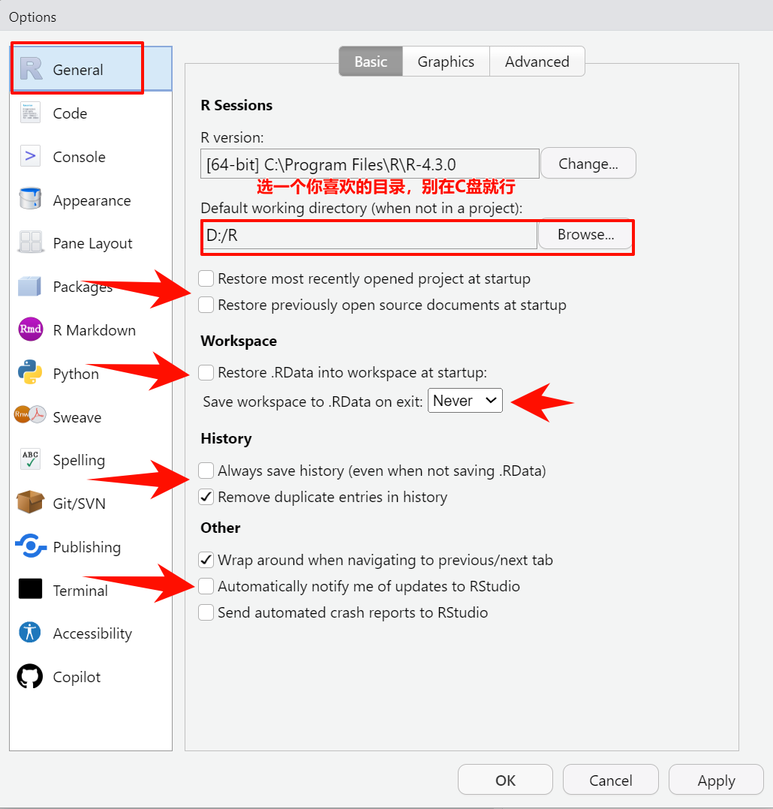
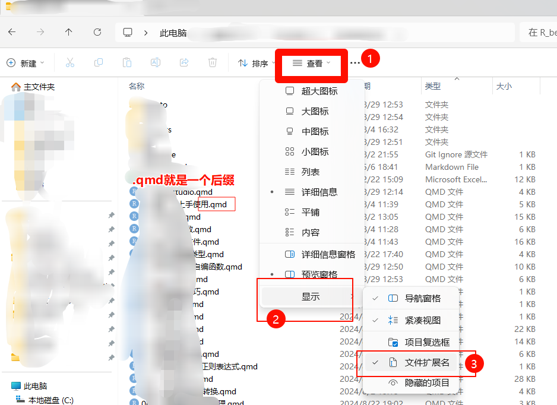

getwd()
## [1] "F:/R_books/r4beginners_base_r"5 导入导出文件
在之前的几章中，我们详细介绍了R语言、Rtools、Rstudio以及R包的安装，解决新手最先碰到的两大难题！
大家学习R语言肯定是为了处理自己的数据，不是为了使用R自带的数据练手。所以这一章就给大家演示：如何把数据读入R语言？如何把数据另存为其他格式？
结合上一章的内容，本章内容其实就是选择合适的函数对数据进行读写操作。
大家在日常生活中遇到的最多的数据应该还是Excel数据，但是对于R语言来说，我们必须要把外部数据读入到R里面，才能进行各种操作。对于我们使用R语言处理之后的数据，可能还需要再保存为excel格式。
这两个问题对于会的人来说非常简单，可以有多种方法可以实现，但是对于新手来说却经常遇到报错。今天从一个新手的角度说一说R语言的数据读取和另存问题。
5.1 工作路径
首先说下工作路径的问题，当前工作目录（working-directory）是你的R语言读取和保存文件的默认位置。
如果你没改过，这个位置有一个默认值，在第2章介绍过：点击Tools-Global Options，按照以下图片所示进行设置，方框里的就是默认工作目录。

确定好你的R语言的工作目录以及你的文件的存放位置后，才能顺利读取文件，比如你的工作目录在D盘，但是你的文件在E盘，如果读取时没有明确指定文件位置，就会报错。
打开RStudio后，可以使用getwd()查看当前工作目录（注意，和视频中的路径不太一样，千万要注意你自己的路径是什么！）：
以上结果说明我在：F:/R_books/r4beginners_base_r这个文件夹里（和视频中的路径略有不同）。
也可以查看Console（控制台）的左上角获取当前的工作目录：
可以使用setwd()重新设置当前工作目录：
# 设置为F盘R_books文件夹
setwd("F:/R_books/")
注释
注意，在R中写路径时需要使用斜杠/，而不是反斜杠\，如果你要在路径中使用反斜杠，必须用两个\\，比如：F:/R_books/和F:\\R_books\\都是正确的，但是F:\R_books\是错误的。
确认当前工作目录是非常重要的，尤其是在读取或者保存文件的时候，你总得知道你目前在哪个文件夹吧？
以下是一些用于管理R工作路径的函数：
除此之外还有一些可以和当前工作目录交互的函数，比如列出当前工作目录下的所有文件和文件夹：
list.files()
## [1] "_book" "_language.yml"
## [3] "_quarto.yml" "01-R和Rstudio.html"
## [5] "01-R和Rstudio.qmd" "02-第一次上手使用.html"
## [7] "02-第一次上手使用.qmd" "03-R包安装.html"
## [9] "03-R包安装.qmd" "04-什么是函数.html"
## [11] "04-什么是函数.qmd" "04-什么是函数_files"
## [13] "05-导入导出文件.qmd" "05-导入导出文件.rmarkdown"
## [15] "06-R中的数据类型.qmd" "07-数据结构.qmd"
## [17] "08-类型判断和转换.qmd" "09-数值和字符串处理.qmd"
## [19] "10-控制结构和自编函数.qmd" "11-apply系列.qmd"
## [21] "12-实用技巧.qmd" "13-TCGA_mrna表达矩阵整理.qmd"
## [23] "14-R绘图入门.qmd" "15-tidyverse简介.qmd"
## [25] "16-完结篇.qmd" "9999-appendix.qmd"
## [27] "brca_clin.xlsx" "brca_filter.R"
## [29] "datasets" "figs"
## [31] "firsttest.R" "index.html"
## [33] "index.qmd" "LICENSE"
## [35] "mystats.R" "preamble.tex"
## [37] "r-beginners.Rproj" "README.md"
## [39] "site_libs" "tcga_meso"
# 类似的函数还有dir()还可以只列出符合要求的文件，比如列出所有以qmd结尾的文件：
list.files(pattern = "qmd$") # 涉及正则表达式
## [1] "01-R和Rstudio.qmd" "02-第一次上手使用.qmd"
## [3] "03-R包安装.qmd" "04-什么是函数.qmd"
## [5] "05-导入导出文件.qmd" "06-R中的数据类型.qmd"
## [7] "07-数据结构.qmd" "08-类型判断和转换.qmd"
## [9] "09-数值和字符串处理.qmd" "10-控制结构和自编函数.qmd"
## [11] "11-apply系列.qmd" "12-实用技巧.qmd"
## [13] "13-TCGA_mrna表达矩阵整理.qmd" "14-R绘图入门.qmd"
## [15] "15-tidyverse简介.qmd" "16-完结篇.qmd"
## [17] "9999-appendix.qmd" "index.qmd"5.2 读取文件
不同文件有不同的后缀名，Windows系统可更改是否显示后缀名：

不同的后缀名说明文件是不同的格式，不同的格式需要不同的软件（函数）才能打开，乱用就会导致打不开或者打开乱码。
5.2.1 Excel
这个格式太常见了，大家日常生活用的大部分都是这种格式。
比如有这么一个excel文件：brca_clin.xlsx，这个数据是我从TCGA官网下载的乳腺癌患者的临床信息，包含：患者ID、样本ID、样本类型（normal还是tumor？）、年龄、性别等。
它里面的内容是这样的：

现在我们需要把它读入R里面。
我推荐你使用readxl包读取Excel文件。这个R包并不是“出厂自带”的，因此我们需要先安装这个R包（提醒：你更改镜像了吗？）：
install.packages("readxl")安装好之后，我们需要加载这个R包才能使用：
library(readxl)然后我们就可以读取这个文件了，读取时，你必须指明你的文件在哪里！这就涉及到工作路径的问题了，如果你的文件和当前工作路径不在同一个文件夹下，那么一定要指定你的文件在哪里。如果文件路径没写对，就会出现下面这种类似的报错，一般情况下，它会告诉你：你的路径没写对、或者找不到这个文件、这个文件不存在、不能打开连接等等错误。
# col_names = TRUE 表示这个文件是有列名的
brca_clin <- read_xlsx("E:/brca_clin.xlsx", col_names = TRUE)
Error: `path` does not exist: ‘E:/brca_clin.xlsx’这个时候你就要去确认下，你的这个brca_clin.xlsx文件到底在哪里！当你给它正确的路径时，它就不会报错。比如这个示例文件位于F:/R_books/r4beginners_base_r中，你写对了就能读进来：
# 读取
brca_clin <- read_xlsx("F:/R_books/r4beginners_base_r/brca_clin.xlsx",
col_names = T)
brca_clin[1:5,2:5] # 查看第1-5行，第2-5列
## # A tibble: 5 × 4
## patient sample sample_type initial_weight
## <chr> <chr> <chr> <dbl>
## 1 TCGA-BH-A1FC TCGA-BH-A1FC-11A Solid Tissue Normal 260
## 2 TCGA-AC-A2FM TCGA-AC-A2FM-11B Solid Tissue Normal 220
## 3 TCGA-BH-A0DO TCGA-BH-A0DO-11A Solid Tissue Normal 130
## 4 TCGA-E2-A1BC TCGA-E2-A1BC-11A Solid Tissue Normal 260
## 5 TCGA-BH-A0BJ TCGA-BH-A0BJ-11A Solid Tissue Normal 200这样我们就成功把文件读取到R里面了，并且这个文件的内容被存储在brca_clin这个对象（object）中，此时你可以在Environment面板中看到brca_clin这个对象。
上面代码中的F:/R_books/r4beginners_base_r/brca_clin.xlsx这种路径写法被称为绝对路径，意思是：从最开始的位置一直往下写，除此之外，还有一种写法是相对路径，即从相对于当前路径的位置开始写。
比如，我这段脚本的当前工作路径位于F盘-R_books文件夹-r4beginners_base_r文件夹中（还记得怎么查看当前工作路径吗？getwd()），和brca_clin.xlsx这个文件同处于一个文件夹中，那么在读取时也可以这么写：
# 因为在同一路径下，所以可以直接写名字
brca_clin <- read_xlsx("brca_clin.xlsx", col_names = T)
# 或者
brca_clin <- read_xlsx("./brca_clin.xlsx", col_names = T)其中的./表示当前工作路径，可以省略不写。
如果一个名字是brca_expr.xlsx的文件位于F盘-R_books文件夹-r4beginners_base_r文件夹-datasets文件夹中，也就是说datasets这个文件夹是和当前工作路径同一级的，但是我们要读取的文件在datasets文件夹中，那么在读取时就可以这么写：
# 加了一个datasets/
brca_expr <- read_xlsx("datasets/brca_expr.xlsx", col_names = T)如果一个名字是brca_expr_不要删.xlsx的文件位于F盘-R_books文件夹中，也就是说位于当前工作路径的上一级文件夹中，如果要读取这个文件，可以使用以下代码：
brca_expr_不要删 <- read_xlsx("../brca_expr_不要删.xlsx", col_names = T)其中，../表示上一级目录（当前工作目录的上一级），不能省略。
以上是对于路径的简单介绍，大家要自己多加练习，仔细体会。
相对路径写起来更加简单，所以以下示例都会用相对路径进行演示。
除了路径问题，对于新手还有几个点需要注意：
- 注意
/，\，""，''，这些标点一定要在英文状态下输入！R语言的文件路径只支持/或者\\，不能是\； - 这个示例文件是有列名的，所以在读取的时候加了
col_names=T这个参数，没有列名就要改成F； - 如果你的数据使用了合并/拆分单元格、各种格式、公式等，会报错！复杂的表头在读取时代码也会变得很复杂，建议大家初学时都整理成示例文件这种简单的表头；
- 这个文件是
.xlsx格式的，如果不是，那你需要用其他函数，比如：使用read_xls()函数读取.xls结尾的文件；每个函数的功能都是有要求的，不能乱用，记得多查看函数的帮助文档。 - 如果你读取中文遇到乱码问题，那大概率是遇到了编码问题，这是一个很复杂的问题：
- 首先你可以通过点击Rstudio中的
Tools-Global Options，到达以下界面，把默认编码方式改为utf-8，然后关闭rstudio，重新读取；
utf8编码 - 有时直接升级R包/R/rstudio/，重新保存文件为utf-8等方式也可以解决问题；
- 如果都不行，直接百度！具体情况具体分析！
- 首先你可以通过点击Rstudio中的
5.2.2 csv
csv文件是一种逗号分隔文件，打开后和excel看起来一模一样，以下是一个csv文件示例，你不要问为什么看不到逗号……
一般推荐把excel文件另存为csv文件，因为方便R语言读取，不需要安装额外的R包也可以读取~
# read.csv是R自带的函数，不用加载R包；header = T 表示这个文件有列名
csv <- read.csv("datasets/brca_clin.csv", header = T)
csv
## barcode patient sample
## 1 TCGA-BH-A1FC-11A-32R-A13Q-07 TCGA-BH-A1FC TCGA-BH-A1FC-11A
## 2 TCGA-AC-A2FM-11B-32R-A19W-07 TCGA-AC-A2FM TCGA-AC-A2FM-11B
## 3 TCGA-BH-A0DO-11A-22R-A12D-07 TCGA-BH-A0DO TCGA-BH-A0DO-11A
## 4 TCGA-E2-A1BC-11A-32R-A12P-07 TCGA-E2-A1BC TCGA-E2-A1BC-11A
## 5 TCGA-BH-A0BJ-11A-23R-A089-07 TCGA-BH-A0BJ TCGA-BH-A0BJ-11A
## 6 TCGA-E2-A1LH-11A-22R-A14D-07 TCGA-E2-A1LH TCGA-E2-A1LH-11A
## 7 TCGA-BH-A1FB-11A-33R-A13Q-07 TCGA-BH-A1FB TCGA-BH-A1FB-11A
## 8 TCGA-BH-A18M-11A-33R-A12D-07 TCGA-BH-A18M TCGA-BH-A18M-11A
## 9 TCGA-BH-A0BM-11A-12R-A089-07 TCGA-BH-A0BM TCGA-BH-A0BM-11A
## 10 TCGA-E2-A153-11A-31R-A12D-07 TCGA-E2-A153 TCGA-E2-A153-11A
## 11 TCGA-B6-A0RH-01A-21R-A115-07 TCGA-B6-A0RH TCGA-B6-A0RH-01A
## 12 TCGA-BH-A1FU-01A-11R-A14D-07 TCGA-BH-A1FU TCGA-BH-A1FU-01A
## 13 TCGA-AR-A0TX-01A-11R-A084-07 TCGA-AR-A0TX TCGA-AR-A0TX-01A
## 14 TCGA-A1-A0SE-01A-11R-A084-07 TCGA-A1-A0SE TCGA-A1-A0SE-01A
## 15 TCGA-OL-A5D6-01A-21R-A27Q-07 TCGA-OL-A5D6 TCGA-OL-A5D6-01A
## 16 TCGA-E2-A1IK-01A-11R-A144-07 TCGA-E2-A1IK TCGA-E2-A1IK-01A
## 17 TCGA-AN-A0FT-01A-11R-A034-07 TCGA-AN-A0FT TCGA-AN-A0FT-01A
## 18 TCGA-A2-A3KD-01A-12R-A213-07 TCGA-A2-A3KD TCGA-A2-A3KD-01A
## 19 TCGA-A2-A0EO-01A-11R-A034-07 TCGA-A2-A0EO TCGA-A2-A0EO-01A
## 20 TCGA-A2-A04P-01A-31R-A034-07 TCGA-A2-A04P TCGA-A2-A04P-01A
## sample_type initial_weight ajcc_pathologic_stage
## 1 Solid Tissue Normal 260 Stage IIA
## 2 Solid Tissue Normal 220 Stage IIB
## 3 Solid Tissue Normal 130 Stage I
## 4 Solid Tissue Normal 260 Stage IA
## 5 Solid Tissue Normal 200 Stage IIB
## 6 Solid Tissue Normal 60 Stage I
## 7 Solid Tissue Normal 320 Stage IIB
## 8 Solid Tissue Normal 310 Stage IIIA
## 9 Solid Tissue Normal 100 Stage IIB
## 10 Solid Tissue Normal 250 Stage IIB
## 11 Primary Tumor 130 Stage IIA
## 12 Primary Tumor 110 Stage IA
## 13 Primary Tumor 470 Stage IIA
## 14 Primary Tumor 90 Stage I
## 15 Primary Tumor 200 Stage IIA
## 16 Primary Tumor 70 Stage IIA
## 17 Primary Tumor 130 Stage IIB
## 18 Primary Tumor 770 Stage IIIA
## 19 Primary Tumor 200 Stage IA
## 20 Primary Tumor 250 Stage IIIC
## days_to_last_follow_up gender age_at_index
## 1 NA female 78
## 2 NA female 87
## 3 1644 female 78
## 4 501 female 63
## 5 660 female 41
## 6 3247 female 59
## 7 NA female 60
## 8 NA female 39
## 9 1876 female 54
## 10 707 female 51
## 11 5749 female 51
## 12 NA female 44
## 13 1972 female 64
## 14 1321 female 56
## 15 385 female 71
## 16 1800 female 71
## 17 214 female 63
## 18 1206 female 47
## 19 2442 female 54
## 20 NA female 36或者用read.table()函数读取。由于该函数可以读取很多格式，而每种文件格式的分隔符并不相同（比如csv文件是逗号分隔，txt文件是Tab分隔），因此在使用该函数时需要指定文件的分隔符：
csv <- read.table("datasets/brca_clin.csv", header = T,
sep = "," # 指定分隔符！
)
csv
## barcode patient sample
## 1 TCGA-BH-A1FC-11A-32R-A13Q-07 TCGA-BH-A1FC TCGA-BH-A1FC-11A
## 2 TCGA-AC-A2FM-11B-32R-A19W-07 TCGA-AC-A2FM TCGA-AC-A2FM-11B
## 3 TCGA-BH-A0DO-11A-22R-A12D-07 TCGA-BH-A0DO TCGA-BH-A0DO-11A
## 4 TCGA-E2-A1BC-11A-32R-A12P-07 TCGA-E2-A1BC TCGA-E2-A1BC-11A
## 5 TCGA-BH-A0BJ-11A-23R-A089-07 TCGA-BH-A0BJ TCGA-BH-A0BJ-11A
## 6 TCGA-E2-A1LH-11A-22R-A14D-07 TCGA-E2-A1LH TCGA-E2-A1LH-11A
## 7 TCGA-BH-A1FB-11A-33R-A13Q-07 TCGA-BH-A1FB TCGA-BH-A1FB-11A
## 8 TCGA-BH-A18M-11A-33R-A12D-07 TCGA-BH-A18M TCGA-BH-A18M-11A
## 9 TCGA-BH-A0BM-11A-12R-A089-07 TCGA-BH-A0BM TCGA-BH-A0BM-11A
## 10 TCGA-E2-A153-11A-31R-A12D-07 TCGA-E2-A153 TCGA-E2-A153-11A
## 11 TCGA-B6-A0RH-01A-21R-A115-07 TCGA-B6-A0RH TCGA-B6-A0RH-01A
## 12 TCGA-BH-A1FU-01A-11R-A14D-07 TCGA-BH-A1FU TCGA-BH-A1FU-01A
## 13 TCGA-AR-A0TX-01A-11R-A084-07 TCGA-AR-A0TX TCGA-AR-A0TX-01A
## 14 TCGA-A1-A0SE-01A-11R-A084-07 TCGA-A1-A0SE TCGA-A1-A0SE-01A
## 15 TCGA-OL-A5D6-01A-21R-A27Q-07 TCGA-OL-A5D6 TCGA-OL-A5D6-01A
## 16 TCGA-E2-A1IK-01A-11R-A144-07 TCGA-E2-A1IK TCGA-E2-A1IK-01A
## 17 TCGA-AN-A0FT-01A-11R-A034-07 TCGA-AN-A0FT TCGA-AN-A0FT-01A
## 18 TCGA-A2-A3KD-01A-12R-A213-07 TCGA-A2-A3KD TCGA-A2-A3KD-01A
## 19 TCGA-A2-A0EO-01A-11R-A034-07 TCGA-A2-A0EO TCGA-A2-A0EO-01A
## 20 TCGA-A2-A04P-01A-31R-A034-07 TCGA-A2-A04P TCGA-A2-A04P-01A
## sample_type initial_weight ajcc_pathologic_stage
## 1 Solid Tissue Normal 260 Stage IIA
## 2 Solid Tissue Normal 220 Stage IIB
## 3 Solid Tissue Normal 130 Stage I
## 4 Solid Tissue Normal 260 Stage IA
## 5 Solid Tissue Normal 200 Stage IIB
## 6 Solid Tissue Normal 60 Stage I
## 7 Solid Tissue Normal 320 Stage IIB
## 8 Solid Tissue Normal 310 Stage IIIA
## 9 Solid Tissue Normal 100 Stage IIB
## 10 Solid Tissue Normal 250 Stage IIB
## 11 Primary Tumor 130 Stage IIA
## 12 Primary Tumor 110 Stage IA
## 13 Primary Tumor 470 Stage IIA
## 14 Primary Tumor 90 Stage I
## 15 Primary Tumor 200 Stage IIA
## 16 Primary Tumor 70 Stage IIA
## 17 Primary Tumor 130 Stage IIB
## 18 Primary Tumor 770 Stage IIIA
## 19 Primary Tumor 200 Stage IA
## 20 Primary Tumor 250 Stage IIIC
## days_to_last_follow_up gender age_at_index
## 1 NA female 78
## 2 NA female 87
## 3 1644 female 78
## 4 501 female 63
## 5 660 female 41
## 6 3247 female 59
## 7 NA female 60
## 8 NA female 39
## 9 1876 female 54
## 10 707 female 51
## 11 5749 female 51
## 12 NA female 44
## 13 1972 female 64
## 14 1321 female 56
## 15 385 female 71
## 16 1800 female 71
## 17 214 female 63
## 18 1206 female 47
## 19 2442 female 54
## 20 NA female 36是不是很简单，注意点和excel一样。
注释
read.table()函数是一个通用的读取表格型数据的函数，它既可以读取csv文件，又可以读取txt文件，只要指定不同的分隔符即可。
5.2.3 txt
txt文件也是我们常见的文件类型，通常这种数据也是可以直接读取的，不需要额外安装R包。
现在我们有一个这样的txt文件，它看起来不规整，但其实是规整的哦，不要被表象迷惑，也千万不要试图用空格键把它对齐！！
txt是tab键分隔的文件，在读取时，一定要指定分隔符：
tmp <- read.table("datasets/brca_clin.txt",
sep = "\t", # 必须要指定分隔符：\t，表示Tab键分隔
header = T)
tmp
## barcode patient sample
## 1 TCGA-BH-A1FC-11A-32R-A13Q-07 TCGA-BH-A1FC TCGA-BH-A1FC-11A
## 2 TCGA-AC-A2FM-11B-32R-A19W-07 TCGA-AC-A2FM TCGA-AC-A2FM-11B
## 3 TCGA-BH-A0DO-11A-22R-A12D-07 TCGA-BH-A0DO TCGA-BH-A0DO-11A
## 4 TCGA-E2-A1BC-11A-32R-A12P-07 TCGA-E2-A1BC TCGA-E2-A1BC-11A
## 5 TCGA-BH-A0BJ-11A-23R-A089-07 TCGA-BH-A0BJ TCGA-BH-A0BJ-11A
## 6 TCGA-E2-A1LH-11A-22R-A14D-07 TCGA-E2-A1LH TCGA-E2-A1LH-11A
## 7 TCGA-BH-A1FB-11A-33R-A13Q-07 TCGA-BH-A1FB TCGA-BH-A1FB-11A
## 8 TCGA-BH-A18M-11A-33R-A12D-07 TCGA-BH-A18M TCGA-BH-A18M-11A
## 9 TCGA-BH-A0BM-11A-12R-A089-07 TCGA-BH-A0BM TCGA-BH-A0BM-11A
## 10 TCGA-E2-A153-11A-31R-A12D-07 TCGA-E2-A153 TCGA-E2-A153-11A
## 11 TCGA-B6-A0RH-01A-21R-A115-07 TCGA-B6-A0RH TCGA-B6-A0RH-01A
## 12 TCGA-BH-A1FU-01A-11R-A14D-07 TCGA-BH-A1FU TCGA-BH-A1FU-01A
## 13 TCGA-AR-A0TX-01A-11R-A084-07 TCGA-AR-A0TX TCGA-AR-A0TX-01A
## 14 TCGA-A1-A0SE-01A-11R-A084-07 TCGA-A1-A0SE TCGA-A1-A0SE-01A
## 15 TCGA-OL-A5D6-01A-21R-A27Q-07 TCGA-OL-A5D6 TCGA-OL-A5D6-01A
## 16 TCGA-E2-A1IK-01A-11R-A144-07 TCGA-E2-A1IK TCGA-E2-A1IK-01A
## 17 TCGA-AN-A0FT-01A-11R-A034-07 TCGA-AN-A0FT TCGA-AN-A0FT-01A
## 18 TCGA-A2-A3KD-01A-12R-A213-07 TCGA-A2-A3KD TCGA-A2-A3KD-01A
## 19 TCGA-A2-A0EO-01A-11R-A034-07 TCGA-A2-A0EO TCGA-A2-A0EO-01A
## 20 TCGA-A2-A04P-01A-31R-A034-07 TCGA-A2-A04P TCGA-A2-A04P-01A
## sample_type initial_weight ajcc_pathologic_stage
## 1 Solid Tissue Normal 260 Stage IIA
## 2 Solid Tissue Normal 220 Stage IIB
## 3 Solid Tissue Normal 130 Stage I
## 4 Solid Tissue Normal 260 Stage IA
## 5 Solid Tissue Normal 200 Stage IIB
## 6 Solid Tissue Normal 60 Stage I
## 7 Solid Tissue Normal 320 Stage IIB
## 8 Solid Tissue Normal 310 Stage IIIA
## 9 Solid Tissue Normal 100 Stage IIB
## 10 Solid Tissue Normal 250 Stage IIB
## 11 Primary Tumor 130 Stage IIA
## 12 Primary Tumor 110 Stage IA
## 13 Primary Tumor 470 Stage IIA
## 14 Primary Tumor 90 Stage I
## 15 Primary Tumor 200 Stage IIA
## 16 Primary Tumor 70 Stage IIA
## 17 Primary Tumor 130 Stage IIB
## 18 Primary Tumor 770 Stage IIIA
## 19 Primary Tumor 200 Stage IA
## 20 Primary Tumor 250 Stage IIIC
## days_to_last_follow_up gender age_at_index
## 1 NA female 78
## 2 NA female 87
## 3 1644 female 78
## 4 501 female 63
## 5 660 female 41
## 6 3247 female 59
## 7 NA female 60
## 8 NA female 39
## 9 1876 female 54
## 10 707 female 51
## 11 5749 female 51
## 12 NA female 44
## 13 1972 female 64
## 14 1321 female 56
## 15 385 female 71
## 16 1800 female 71
## 17 214 female 63
## 18 1206 female 47
## 19 2442 female 54
## 20 NA female 365.2.4 tsv
这个类型的文件也是以\t为分隔符的，所以读取时和txt文件完全一样，使用read.table()函数即可，就不重复介绍了。
5.2.5 SPSS
如果是spss软件产生的.sav文件，可以使用foreign包中的read.spss()函数读取，或者使用haven包中的read_sav()函数。
这两个包在使用前需要先安装，安装过程这里就不演示了。
# foreign包读取
library(foreign)
spss <- foreign::read.spss("datasets/例03-05.sav",to.data.frame = T)
spss
## no hb
## 1 1 112
## 2 2 137
## 3 3 129
## 4 4 126
## 5 5 88
## 6 6 90
## 7 7 105
## 8 8 178
## 9 9 130
## 10 10 128
## 11 11 126
## 12 12 103
## 13 13 172
## 14 14 116
## 15 15 125
## 16 16 90
## 17 17 96
## 18 18 162
## 19 19 157
## 20 20 151
## 21 21 135
## 22 22 113
## 23 23 175
## 24 24 129
## 25 25 165
## 26 26 171
## 27 27 128
## 28 28 128
## 29 29 160
## 30 30 110
## 31 31 140
## 32 32 163
## 33 33 100
## 34 34 129
## 35 35 116
## 36 36 127
注释
这里的foreign::read.spss()使用了包的名字::函数名字这种方法，意思是指定使用foreign中的read.spss()函数。有时候不同的R包中会有相同名字的函数，使用这种方法可以避免混淆。
# haven包读取
library(haven)
spss <- read_sav("datasets/例03-05.sav")
spss
## # A tibble: 36 × 2
## no hb
## <dbl> <dbl>
## 1 1 112
## 2 2 137
## 3 3 129
## 4 4 126
## 5 5 88
## 6 6 90
## 7 7 105
## 8 8 178
## 9 9 130
## 10 10 128
## # ℹ 26 more rows这个例子是比较简单的，有时候需要指定特定的编码方式，可以通过使用?read_sav/?read.spss查看更改编码的方式。
haven这个包是专门设计用来读取spss/SAS/STATA格式的文件的。
5.2.6 rdata
如果是rdata/Rdata/RData文件，这个是R自带的格式，大小写不影响，都能识别，直接load()即可，但是要注意一定要写对文件路径！或者也可以直接双击rdata/Rdata/RData文件，或者选中文件-单击鼠标右键-打开方式-选择Rstudio。
如果要读取一个名字为brca_example.rdata的文件，它位于datasets这个文件夹（这个文件夹是和当前工作目录同一级的）中，可以使用以下代码：
# 直接加载
load(file = "datasets/brca_example.rdata")如果是rds文件，这个也是R常用的格式，使用readRDS()函数即可，也要注意文件路径。
# 注意要取一个名字
tmp <- readRDS(file = "datasets/brca_example.rds") 常见的就是这些，当你掌握这些简单的之后，你可以尝试更加复杂的，以后肯定也会遇到，不过有了这些简单的作为基础，相信你能更快的解决这类问题。
5.3 查看文件
下面是一些常用的用于帮助检查数据的函数（后面的章节还会继续介绍）：
dim(brca_clin) # 查看数据有多少行多少列，dim是dimension的缩写
## [1] 20 9
str(brca_clin) # 查看数据的结构，几行几列？数据类型？
## 'data.frame': 20 obs. of 9 variables:
## $ barcode : chr "TCGA-BH-A1FC-11A-32R-A13Q-07" "TCGA-AC-A2FM-11B-32R-A19W-07" "TCGA-BH-A0DO-11A-22R-A12D-07" "TCGA-E2-A1BC-11A-32R-A12P-07" ...
## $ patient : chr "TCGA-BH-A1FC" "TCGA-AC-A2FM" "TCGA-BH-A0DO" "TCGA-E2-A1BC" ...
## $ sample : chr "TCGA-BH-A1FC-11A" "TCGA-AC-A2FM-11B" "TCGA-BH-A0DO-11A" "TCGA-E2-A1BC-11A" ...
## $ sample_type : chr "Solid Tissue Normal" "Solid Tissue Normal" "Solid Tissue Normal" "Solid Tissue Normal" ...
## $ initial_weight : num 260 220 130 260 200 60 320 310 100 250 ...
## $ ajcc_pathologic_stage : chr "Stage IIA" "Stage IIB" "Stage I" "Stage IA" ...
## $ days_to_last_follow_up: int NA NA 1644 501 660 3247 NA NA 1876 707 ...
## $ gender : chr "female" "female" "female" "female" ...
## $ age_at_index : int 78 87 78 63 41 59 60 39 54 51 ...
class(brca_clin) # 数据类型
## [1] "data.frame"
colnames(brca_clin) # 查看列名
## [1] "barcode" "patient" "sample"
## [4] "sample_type" "initial_weight" "ajcc_pathologic_stage"
## [7] "days_to_last_follow_up" "gender" "age_at_index"
names(brca_clin) # 查看列名
## [1] "barcode" "patient" "sample"
## [4] "sample_type" "initial_weight" "ajcc_pathologic_stage"
## [7] "days_to_last_follow_up" "gender" "age_at_index"
rownames(brca_clin) # 查看行名
## [1] "TCGA-BH-A1FC-11A-32R-A13Q-07" "TCGA-AC-A2FM-11B-32R-A19W-07"
## [3] "TCGA-BH-A0DO-11A-22R-A12D-07" "TCGA-E2-A1BC-11A-32R-A12P-07"
## [5] "TCGA-BH-A0BJ-11A-23R-A089-07" "TCGA-E2-A1LH-11A-22R-A14D-07"
## [7] "TCGA-BH-A1FB-11A-33R-A13Q-07" "TCGA-BH-A18M-11A-33R-A12D-07"
## [9] "TCGA-BH-A0BM-11A-12R-A089-07" "TCGA-E2-A153-11A-31R-A12D-07"
## [11] "TCGA-B6-A0RH-01A-21R-A115-07" "TCGA-BH-A1FU-01A-11R-A14D-07"
## [13] "TCGA-AR-A0TX-01A-11R-A084-07" "TCGA-A1-A0SE-01A-11R-A084-07"
## [15] "TCGA-OL-A5D6-01A-21R-A27Q-07" "TCGA-E2-A1IK-01A-11R-A144-07"
## [17] "TCGA-AN-A0FT-01A-11R-A034-07" "TCGA-A2-A3KD-01A-12R-A213-07"
## [19] "TCGA-A2-A0EO-01A-11R-A034-07" "TCGA-A2-A04P-01A-31R-A034-07"
head(brca_clin) # 查看前6行数据
## barcode patient
## TCGA-BH-A1FC-11A-32R-A13Q-07 TCGA-BH-A1FC-11A-32R-A13Q-07 TCGA-BH-A1FC
## TCGA-AC-A2FM-11B-32R-A19W-07 TCGA-AC-A2FM-11B-32R-A19W-07 TCGA-AC-A2FM
## TCGA-BH-A0DO-11A-22R-A12D-07 TCGA-BH-A0DO-11A-22R-A12D-07 TCGA-BH-A0DO
## TCGA-E2-A1BC-11A-32R-A12P-07 TCGA-E2-A1BC-11A-32R-A12P-07 TCGA-E2-A1BC
## TCGA-BH-A0BJ-11A-23R-A089-07 TCGA-BH-A0BJ-11A-23R-A089-07 TCGA-BH-A0BJ
## TCGA-E2-A1LH-11A-22R-A14D-07 TCGA-E2-A1LH-11A-22R-A14D-07 TCGA-E2-A1LH
## sample sample_type
## TCGA-BH-A1FC-11A-32R-A13Q-07 TCGA-BH-A1FC-11A Solid Tissue Normal
## TCGA-AC-A2FM-11B-32R-A19W-07 TCGA-AC-A2FM-11B Solid Tissue Normal
## TCGA-BH-A0DO-11A-22R-A12D-07 TCGA-BH-A0DO-11A Solid Tissue Normal
## TCGA-E2-A1BC-11A-32R-A12P-07 TCGA-E2-A1BC-11A Solid Tissue Normal
## TCGA-BH-A0BJ-11A-23R-A089-07 TCGA-BH-A0BJ-11A Solid Tissue Normal
## TCGA-E2-A1LH-11A-22R-A14D-07 TCGA-E2-A1LH-11A Solid Tissue Normal
## initial_weight ajcc_pathologic_stage
## TCGA-BH-A1FC-11A-32R-A13Q-07 260 Stage IIA
## TCGA-AC-A2FM-11B-32R-A19W-07 220 Stage IIB
## TCGA-BH-A0DO-11A-22R-A12D-07 130 Stage I
## TCGA-E2-A1BC-11A-32R-A12P-07 260 Stage IA
## TCGA-BH-A0BJ-11A-23R-A089-07 200 Stage IIB
## TCGA-E2-A1LH-11A-22R-A14D-07 60 Stage I
## days_to_last_follow_up gender age_at_index
## TCGA-BH-A1FC-11A-32R-A13Q-07 NA female 78
## TCGA-AC-A2FM-11B-32R-A19W-07 NA female 87
## TCGA-BH-A0DO-11A-22R-A12D-07 1644 female 78
## TCGA-E2-A1BC-11A-32R-A12P-07 501 female 63
## TCGA-BH-A0BJ-11A-23R-A089-07 660 female 41
## TCGA-E2-A1LH-11A-22R-A14D-07 3247 female 59
tail(brca_clin) # 查看最后6行数据
## barcode patient
## TCGA-OL-A5D6-01A-21R-A27Q-07 TCGA-OL-A5D6-01A-21R-A27Q-07 TCGA-OL-A5D6
## TCGA-E2-A1IK-01A-11R-A144-07 TCGA-E2-A1IK-01A-11R-A144-07 TCGA-E2-A1IK
## TCGA-AN-A0FT-01A-11R-A034-07 TCGA-AN-A0FT-01A-11R-A034-07 TCGA-AN-A0FT
## TCGA-A2-A3KD-01A-12R-A213-07 TCGA-A2-A3KD-01A-12R-A213-07 TCGA-A2-A3KD
## TCGA-A2-A0EO-01A-11R-A034-07 TCGA-A2-A0EO-01A-11R-A034-07 TCGA-A2-A0EO
## TCGA-A2-A04P-01A-31R-A034-07 TCGA-A2-A04P-01A-31R-A034-07 TCGA-A2-A04P
## sample sample_type initial_weight
## TCGA-OL-A5D6-01A-21R-A27Q-07 TCGA-OL-A5D6-01A Primary Tumor 200
## TCGA-E2-A1IK-01A-11R-A144-07 TCGA-E2-A1IK-01A Primary Tumor 70
## TCGA-AN-A0FT-01A-11R-A034-07 TCGA-AN-A0FT-01A Primary Tumor 130
## TCGA-A2-A3KD-01A-12R-A213-07 TCGA-A2-A3KD-01A Primary Tumor 770
## TCGA-A2-A0EO-01A-11R-A034-07 TCGA-A2-A0EO-01A Primary Tumor 200
## TCGA-A2-A04P-01A-31R-A034-07 TCGA-A2-A04P-01A Primary Tumor 250
## ajcc_pathologic_stage days_to_last_follow_up
## TCGA-OL-A5D6-01A-21R-A27Q-07 Stage IIA 385
## TCGA-E2-A1IK-01A-11R-A144-07 Stage IIA 1800
## TCGA-AN-A0FT-01A-11R-A034-07 Stage IIB 214
## TCGA-A2-A3KD-01A-12R-A213-07 Stage IIIA 1206
## TCGA-A2-A0EO-01A-11R-A034-07 Stage IA 2442
## TCGA-A2-A04P-01A-31R-A034-07 Stage IIIC NA
## gender age_at_index
## TCGA-OL-A5D6-01A-21R-A27Q-07 female 71
## TCGA-E2-A1IK-01A-11R-A144-07 female 71
## TCGA-AN-A0FT-01A-11R-A034-07 female 63
## TCGA-A2-A3KD-01A-12R-A213-07 female 47
## TCGA-A2-A0EO-01A-11R-A034-07 female 54
## TCGA-A2-A04P-01A-31R-A034-07 female 36
rm(brca_clin) # 从当前环境（environment）中清除对象5.4 保存文件
保存文件我觉得比读取文件要简单一点，如果你实在不知道怎么保存，有个简便方法，在Environment面板中有个保存按钮，点击即可保存所有对象到RData文件中：
直接点击保存，就会在你当前工作目录产生一个RData文件，下次直接load或者双击即可快速打开你的所有东西！不过不建议这么做，因为这个RData文件可能会很大。
不太推荐直接保存为excel格式，建议使用csv格式。
如果是想把tmp这个对象保存为csv文件，可以使用write.csv()或者write.table()，write.table()和read.table()类似，也是可以把文件保存为多种格式，只需要指定分隔符即可。
# 把tmp这个数据框保存为csv
write.csv(tmp, # 要保存的对象
file = "datasets/111.csv", #保存到哪里？格式？ .csv不要忘记！
quote = F, # 不加引号
row.names = F # 有没有行名
)
# 或者使用write.table
write.table(tmp,
file = "datasets/111.csv", #保存到哪里，保存为什么格式，.csv不要忘记！
sep = ",", # 必须指定分隔符！
quote = F, # 不加引号
row.names = F, # 行名
col.names = T # 列名
)如果要保存为或者txt文件，也可以使用write.table()：
write.table(tmp,
file = "datasets/222.txt",
sep = "\t", # 千万别忘记指定分隔符！
quote = F, # 不加引号
row.names = F, # 行名
col.names = T # 列名
)如果要保存为rdata/Rdata/RData文件，直接用save()函数，简单方便，下次直接load即可，还可以同时保存多个对象！！
推荐大家平时保存时选择rdata/Rdata/RData/rds，方便，官方！
save(tmp,csv, # 同时保存多个对象
file = "datasets/tmp1.rdata") # 保存文件的位置和名字保存为rds格式：
# rds格式不能同时保存多个对象
saveRDS(tmp, file = "datasets/tmp.rds")以上就是常见的数据读取和保存，最后再说一遍注意点：
- 输入法需要是英文状态下的标点符号！
- 文件路径必须写对！
- 注意不同文件的分隔符！
- 不同文件使用不同函数读取/写出！不要所有的格式都用一个函数！
- 如果碰到不知道的格式读取，直接百度！99.999%能解决你的问题！
希望大家以后再也不要碰到数据读取问题！
数据读取之后，下一步就是对数据进行各种各样的操作，这也是R语言中最重要的基础知识。不过在学习数据操作之前，我们先学习一下R语言中的数据类型和数据结构。